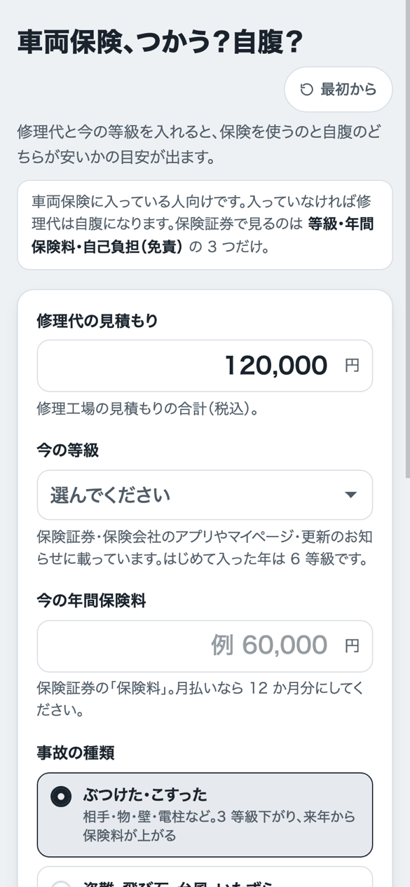
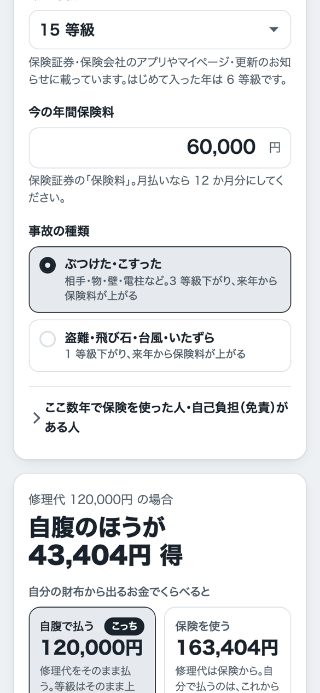
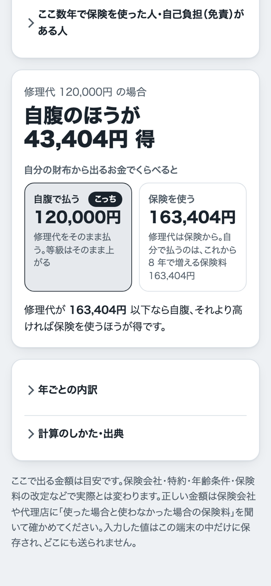

車を小さくぶつけたとき、保険を使うか、自腹かの目安を出します
修理代の見積もりと、保険証券の等級・年間保険料を入れるだけ。「どちらが得か」と、「修理代がいくら以下なら自腹のほうが得か（分かれ目）」がわかります。登録もインストールもいりません。
さっそく使ってみる金額はすべて目安です。車両保険に入っていない人は、修理代は自腹になります。
使い方は3ステップ
-
1見積もりの修理代を入れる
修理工場でもらった見積もりの合計（税込）を、「修理代の見積もり」に入れます。

-
2等級と年間保険料を入れて、事故の種類を選ぶ
保険証券（または保険会社のアプリ・更新のお知らせ）で、「等級」と「年間保険料」を見て入れます。月払いの人は、12か月分にしてください。
事故の種類は、ふつうは「ぶつけた・こすった」（3等級下がる）です。盗難・飛び石・台風などのときは、もう一方を選びます。
自己負担（免責）がある人や、ここ数年で保険を使った人は、「くわしく設定」を開いて入れます。ふつうは開かなくて大丈夫です。

-
3答えを見る
いちばん上に「自腹のほうが得」か「保険を使うほうが得」と、その差額が出ます。下の2つのカードは、自分の財布から出るお金でくらべた金額です。
「修理代が〇〇円以下なら自腹」の行が分かれ目です。見積もりがその金額より安ければ自腹、高ければ保険を使うほうが得です。
例：修理代120,000円・15等級・年間保険料60,000円・ぶつけた場合は、自腹のほうが43,404円得、と出ます。

よくある質問
車両保険に入っていないときは？
車両保険に入っていないと、自分の車の修理代は保険から出ません。自腹になります。このアプリは、車両保険に入っている人向けです。
等級がわからないときは？
保険証券、保険会社のアプリやマイページ、更新のお知らせに載っています。はじめて入った年は6等級です。どうしてもわからないときは、保険会社や代理店に聞いてください。
自己負担（免責）とは？
自己負担（免責）＝車両保険を使うとき、自分で先に払うお金のことです。保険証券の「免責金額」に書いてあります。「なし」なら0円のままで大丈夫です。
出た金額は、どこまで正しいですか？
あくまで目安です。保険会社・特約・年齢条件・保険料の改定などで、実際とは変わります。
正しい金額は、保険会社や代理店に「使った場合と使わなかった場合の保険料」を聞いて確かめてください。
入れた値は、どこかに送られますか？
送られません。入れた値は、お使いの端末のブラウザの中（＝ブラウザの中にデータをしまっておく場所のこと）だけに覚えておきます。「最初から」を押すと消せます。
保険を使うか、自腹か。目安を出してみませんか？
アプリに戻る